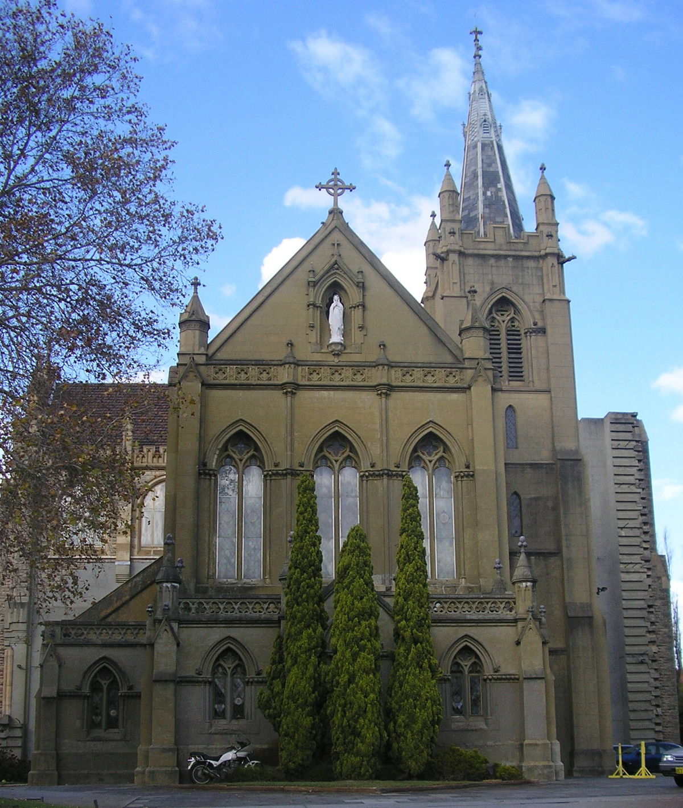

Painting of the first day of the battle by HMS Namur in the centre left
The naval Battle of Lagos took place between a British fleet commanded by Sir Edward Boscawen and a French fleet under Jean-François de La Clue-Sabran over two days in 1759 during the Seven Years' War. They fought south west of the Gulf of Cádiz on 18 August and to the east of the small Portuguese port of Lagos, after which the battle is named, on 19 August. La Clue was attempting to evade Boscawen and bring the French Mediterranean Fleet into the Atlantic, avoiding battle if possible; he was then under orders to sail for the West Indies. Boscawen was under orders to prevent a French breakout into the Atlantic, and to pursue and fight the French if they did. During the evening of 17 August the French fleet successfully passed through the Strait of Gibraltar, but was sighted by a British ship shortly after it entered the Atlantic. The British fleet was in nearby Gibraltar, undergoing a major refit. It left port amidst great confusion, most ships not having their refurbishments completed, with many delayed and sailing in a second squadron. Aware that he was pursued, La Clue altered his plan and changed course; half his ships failed to follow him in the dark, but the British did. The British caught up with the French on the 18th and fierce fighting ensued, during which several ships were badly damaged and one French ship was captured. The British, who greatly outnumbered the remaining six French ships, pursued them through the moonlit night of 18–19 August, during which a further two French ships made their escape. On the 19th the remnants of the French fleet attempted to shelter in neutral Portuguese waters near Lagos, but Boscawen violated that neutrality, capturing a further two French ships and destroying the other two (Full article)Recently featured
Did you know ..?
A church, with many architectural features traditional to such a structure.